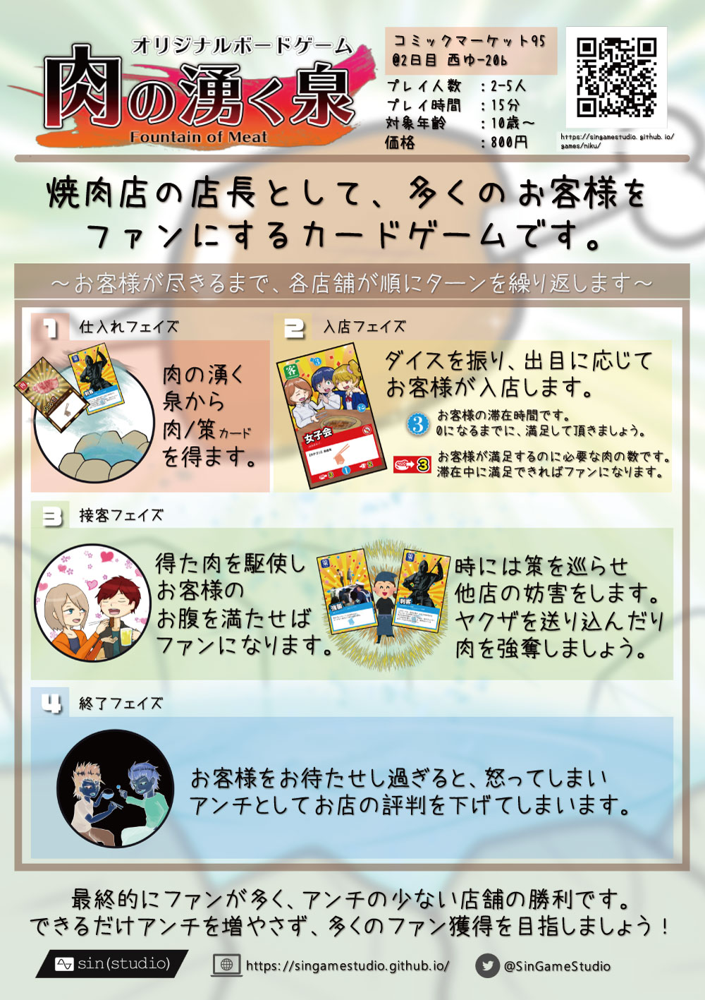

ボードゲーム制作サークル
オリジナルボードゲーム
肉の湧く泉
ゲームマーケット2019春（5/25 土曜日 V25）にて頒布！

| プレイ人数 | 2-5人（推奨：3-4人） |
|---|---|
| プレイ時間 | 15分程度 |
| 対象年齢 | 10歳以上 |
| 内容物 | 肉カード38枚・客カード20枚・策カード26枚・ルールブック1冊 |
| 価格（イベント頒布時） | 800円 |
| イベント参加歴 | コミックマーケット95・ゲームマーケット2019春 |
コンポーネント
このゲームについて
ストーリー
ある日、世界に突如【肉の湧く泉】が出現した。
「これでいつでも焼肉が食べられる」
人間はその欲望を抑えられず、泉を独占しようと世界中で戦争が起こった。
エラい人が言った。
「より多くの客を満足させたものに肉の湧く泉をくれてやる。それはすなわちこの世の全てを手に入れることと同じだ」
こうして、世は焼肉戦国時代を迎えた。
あなたは焼肉店の店長となり、より多くのお客様をファンにすることを目指します。
お店には、肉の湧く泉から絶えず様々な肉が運ばれてきます。
あなたがその肉を的確に提供できれば、お客様はあなたのお店のファンになってくれるでしょう。
ただし、お客様も神様ではありません。あまりお待たせしてしまうと怒ってしまい、アンチとなってお店の評判を下げてしまいます…
他店からの妨害や対応が難しいお客様にも負けず、より多くのお客様に満足していただけるよう今日も一日がんばりましょう！
カードについて
肉カード

お客様に提供するカードです。お客様を満足させるためには時にリスクを冒してでも提供しなければならないことも…？
客カード

お客様です。肉を提供してあなたのお店のファンになってもらえれば、売上で肉の湧く泉からカードを補充することができます。
策カード

肉の湧く泉から与えられる策です。自分を有利にしたり相手を妨害したり、場をかき回して戦国時代を生き延びましょう。
Q & A
肉以外の肉カード【キムチ／サンチュ／アルコール】は客に提供する肉カードとして使える？
使えません。肉の絵柄が描かれていない肉カードは肉ではありません。これらサイドメニューは肉と一緒に提供することで初めて最高のハーモニーを奏でます。
ゲーム終了時に店内に残っている客カードの得点計算処理はどうする？
ゲーム終了時に店内に残っている客カードはファンでもアンチでもないため、得点計算には含めません。
閉店に近づいた後（路上から客が居なくなった後）、策カードの効果等で再び路上に客カードが戻った場合は終了ターンは伸びるの？
伸びません。閉店に近づいた後は、再び路上に客が居たとしても、路上から「最初」に客カードが尽きてから1ターンで終了です。
肉カード【シャトーブリアン】と【キムチ】を同時に使用した場合、★★の肉カード6枚分として使える？
使えます。キムチの効果は同時に使用した肉カードを3枚分として使用可能にするというカードですので、シャトーブリアン3枚分として使用することができます。その結果、例えば★★★の肉カード1枚、★★の肉カード4枚分として使用することができます。
策・客共用カード【焼肉奉行】の効果は焼肉奉行自身にも適用されるか？
されます。焼き加減にこだわりがあります。
策カード【刺客】によるカードトレード時は待ちターン数は引き継がれるか？
引き継がれます。お客様はお腹を空かせてイライラしています。
摘発や食中毒でターンをスキップされた場合、待ちターンはカウントされるか？
されません。すべてのフェーズがスキップされます。
使用済み策カードは使用済み肉カードと同様に肉の湧く泉に戻してシャッフルしても良い？
良いです。使用済み策カードおよび肉カードは一度地下水脈（墓地）へ送られた後、肉の湧く泉が枯れた場合は地下水脈をシャッフルして再び泉として使用します。不思議な泉です。なお、「ゲームから除外する」と効果に書かれているカードを使用した場合は泉には戻らずゲームから除外してください。強すぎるので1回のゲームで1度しか使えないカードです。